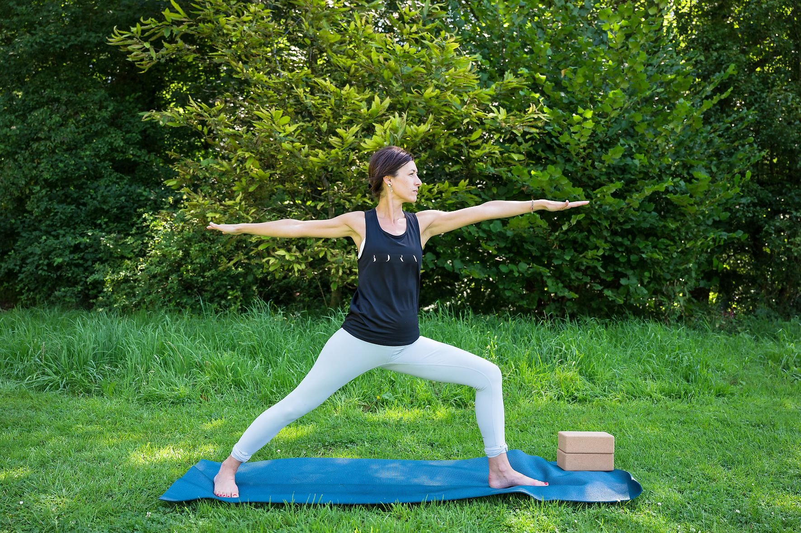

Hatha Yoga Alignement · Bruxelles

Docteure en sciences épidémiologiques et actuellement cadre dans l'industrie pharmaceutique, l'environnement professionnel a souvent été — et reste — un défi pour maintenir un équilibre harmonieux entre vie privée et vie professionnelle. C'est à travers la pratique du yoga que j'ai trouvé des outils précieux pour développer ma résilience, cultiver une meilleure capacité d'acceptation et nourrir une présence plus consciente au quotidien.
Pratiquante de yoga depuis 2009, j'ai initialement découvert cette discipline par curiosité, avant qu'elle ne devienne un véritable art de vivre. Au fil des années, j'ai enrichi mon parcours yogique auprès de différents enseignants, à travers des cours, retraites et stages, afin d'approfondir ma pratique et de m'ouvrir à une diversité d'approches. Forte de ces expériences, je me suis formée au Hatha Yoga (200 heures) avec François Raoult et au Yoga Restauratif (75 heures) avec Lou de Vitry. Je suis également formée au programme Relax & Renew®️ Level 1, inspiré de l'enseignement de Judith Lasater.
La pratique que je propose est un Hatha Yoga Alignement, basé sur les principes de l'enseignement Iyengar. Une attention particulière est portée à l'alignement du corps, à la qualité de la présence dans la posture et à une progression structurée et adaptée à chacun. Les cours incluent le travail des asanas avec supports (props), une introduction aux techniques de pranayama (respiration) et se terminent par un temps de relaxation.
Je propose également des ateliers de yoga restauratif, conçus pour favoriser la détente profonde, la récupération et le soutien du système nerveux, dans un cadre sécurisant et bienveillant.
Retrouvez-la sur Instagram & Facebook : Yoga avec Corinne
Contact :
corinnewillame@hotmail.com
Tél. : +32 495 766 344